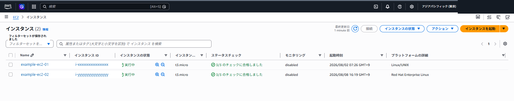
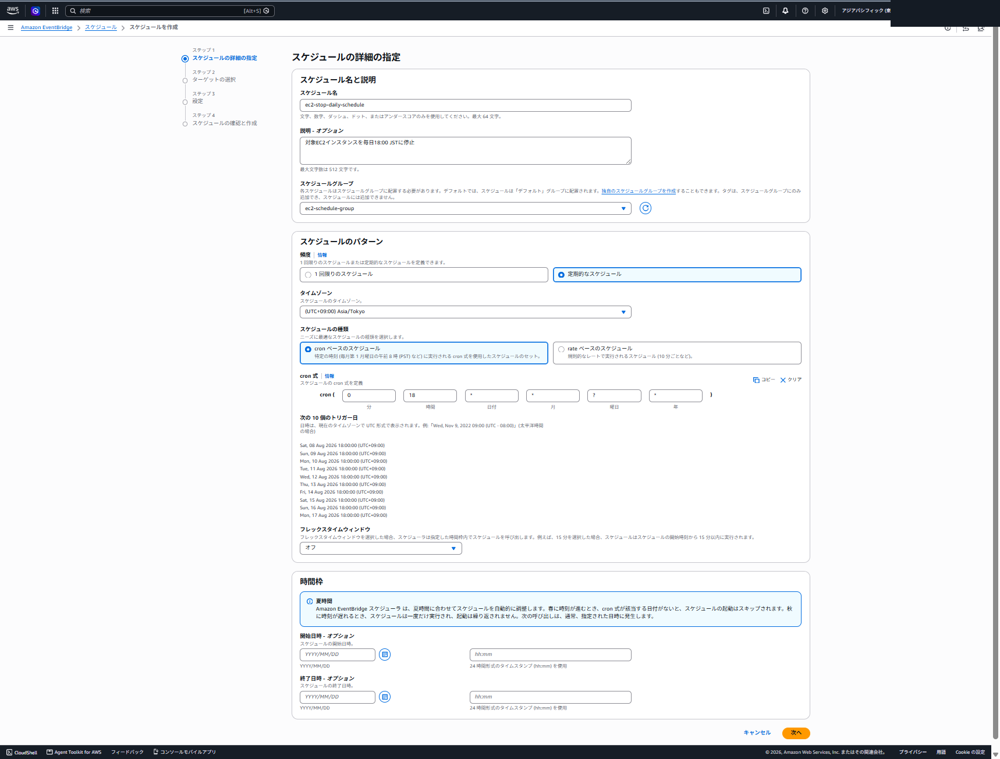
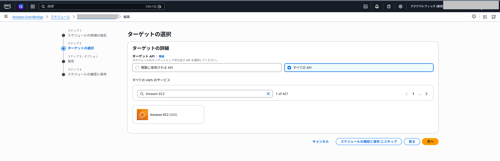
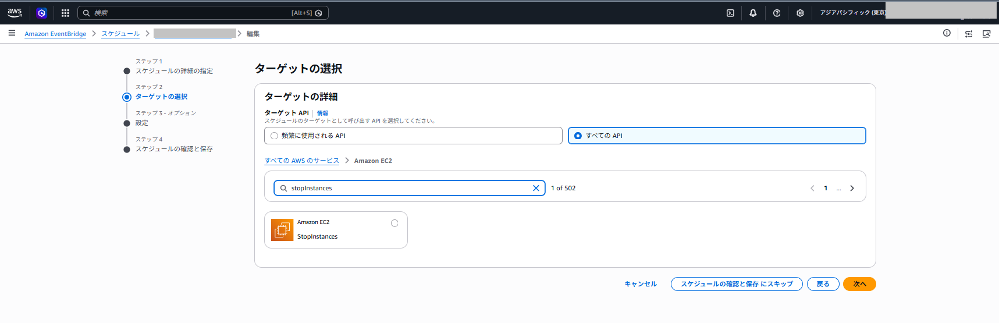
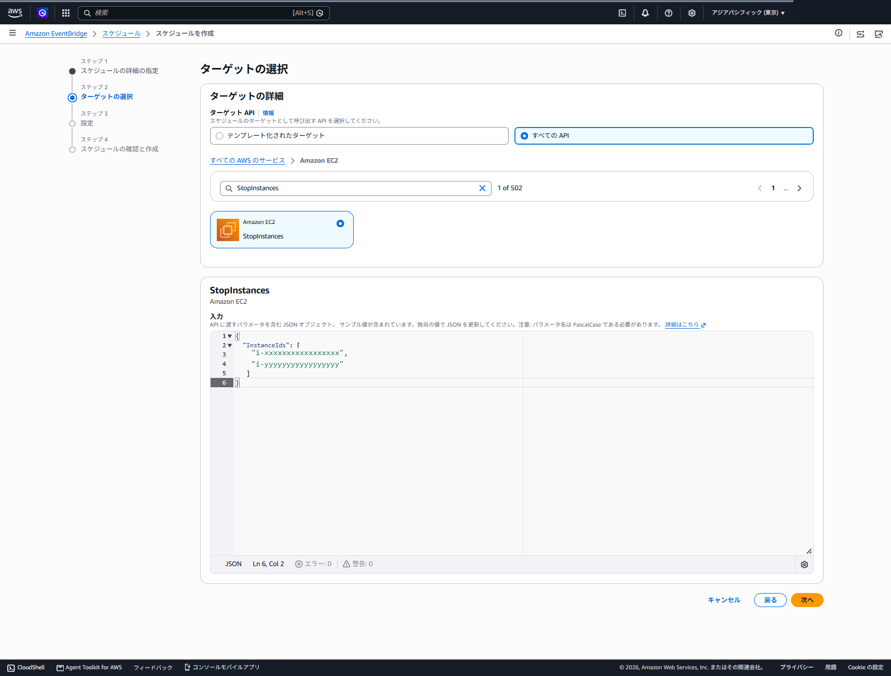
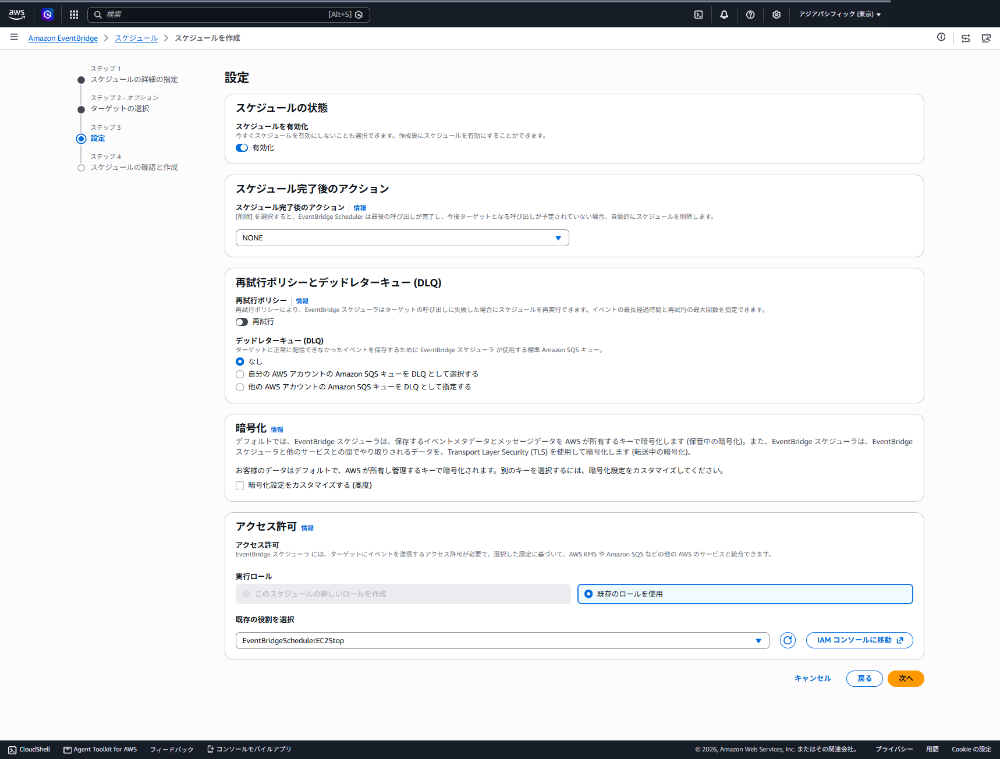

EventBridge Scheduler
AWSサービスの停止・起動を指定時刻に実行するための設定手順を整理する
自動停止・起動を適用できる主なサービス
対象可否は「サービス名」ではなく「そのAPI操作がUniversal targetで利用可能か」「リソースが状態遷移をサポートするか」「実行ロールに権限があるか」で判断する
| サービス | 停止または縮退API | 起動または復帰API | 用途と主な制約 |
|---|---|---|---|
| Amazon EC2 | stopInstances | startInstances | EBSルートボリュームのインスタンスに適用。停止中はパブリックIPv4アドレスが変わる場合がある |
| Amazon RDS | stopDBInstance / stopDBCluster | startDBInstance / startDBCluster | DBインスタンスとAurora・RDS Multi-AZ DBクラスターを同じAmazon RDSターゲットで操作する。停止可能な構成と7日後の自動起動を確認 |
| Amazon DocumentDB | stopDBCluster | startDBCluster | 開発・検証用途で停止可能。クラスター状態、料金、対応リージョンを事前確認 |
| Amazon Neptune | stopDBCluster | startDBCluster | 最大7日間停止可能。クラスターの復帰時間とアプリケーションの再接続を考慮 |
| Amazon WorkSpaces | stopWorkspaces | startWorkspaces | AutoStopまたはManualの停止済みWorkSpaceを開始可能。1リクエストで最大25台を指定 |
| Amazon Redshift | pauseCluster | resumeCluster | 停止ではなく一時停止・再開。再開まで数分以上かかる場合があり、停止不可なクラスター条件がある |
| Amazon SageMaker | stopNotebookInstance | startNotebookInstance | Notebookインスタンスを検証環境の夜間停止に使用する。セッション終了と接続中ユーザーへの影響を確認 |
| Amazon Lightsail | stopInstance | startInstance | 停止・起動APIに対応。静的IPの割り当てと、停止中も発生する料金を確認 |
| Amazon ECS | updateServiceでdesiredCountを0へ縮退 | updateServiceで復帰値を設定 | サービスのdesired countを変更する方式。復帰値を入力へ固定するため、状態を保持するワークフローを推奨 |
| AWS Auto Scaling | updateAutoScalingGroupで容量を0へ縮退 | updateAutoScalingGroupで復帰値を設定 | 最小・最大・希望容量を変更する方式。ほかのスケーリングポリシーとの競合を確認 |
カスタムIAMポリシーの作成
IAMコンソールで「ポリシーを作成」を開き、JSONタブへ対象Scheduleに対応する許可ポリシーを貼り付けて作成する。停止用と起動用は別ポリシーとして管理する
ポリシー名: EC2InstanceStopPolicy
{
"Version": "2012-10-17",
"Statement": [{
"Sid": "PolicyForStopEC2Instance",
"Effect": "Allow",
"Action": "ec2:StopInstances",
"Resource": "*"
}]
}ポリシー名: EC2InstanceStartPolicy
{
"Version": "2012-10-17",
"Statement": [{
"Sid": "PolicyForStartEC2Instance",
"Effect": "Allow",
"Action": "ec2:StartInstances",
"Resource": "*"
}]
}ポリシー名: RDSInstanceStopPolicy
{
"Version": "2012-10-17",
"Statement": [{
"Sid": "PolicyForStopRDSInstance",
"Effect": "Allow",
"Action": "rds:StopDBInstance",
"Resource": "*"
}]
}ポリシー名: RDSInstanceStartPolicy
{
"Version": "2012-10-17",
"Statement": [{
"Sid": "PolicyForStartRDSInstance",
"Effect": "Allow",
"Action": "rds:StartDBInstance",
"Resource": "*"
}]
}ポリシー名: LightsailInstanceStopPolicy
{
"Version": "2012-10-17",
"Statement": [{
"Sid": "PolicyForStopLightsailInstance",
"Effect": "Allow",
"Action": "lightsail:StopInstance",
"Resource": "*"
}]
}ポリシー名: LightsailInstanceStartPolicy
{
"Version": "2012-10-17",
"Statement": [{
"Sid": "PolicyForStartLightsailInstance",
"Effect": "Allow",
"Action": "lightsail:StartInstance",
"Resource": "*"
}]
}ポリシー名: WorkSpacesStopPolicy
{
"Version": "2012-10-17",
"Statement": [{
"Sid": "PolicyForStopWorkSpaces",
"Effect": "Allow",
"Action": "workspaces:StopWorkspaces",
"Resource": "*"
}]
}ポリシー名: WorkSpacesStartPolicy
{
"Version": "2012-10-17",
"Statement": [{
"Sid": "PolicyForStartWorkSpaces",
"Effect": "Allow",
"Action": "workspaces:StartWorkspaces",
"Resource": "*"
}]
}上記はコンソール検証を進めやすくするためResourceを*としている。実運用では、停止を許可するEC2インスタンスARNだけへ制限する。RDSやWorkSpacesは同じポリシーへ混在させず、サービスと操作単位で権限を分離する
IAMロールの作成
次に、Schedulerが引き受ける実行ロールEventBridgeSchedulerEC2Stopを作成する。IAMコンソールで「ロールを作成」を開き、「カスタム信頼ポリシー」を選択してScheduler用の信頼ポリシーを登録する
- IAMの「ロールを作成」を開き、「カスタム信頼ポリシー」を選択
- 次の信頼ポリシーを登録
- 許可ポリシーとして
EC2InstanceStopPolicyをアタッチし、ロール名をEventBridgeSchedulerEC2Stopとして作成
実行ロールのカスタム信頼ポリシーは次のとおり
{
"Version": "2012-10-17",
"Statement": [{
"Effect": "Allow",
"Principal": { "Service": "scheduler.amazonaws.com" },
"Action": "sts:AssumeRole"
}]
}Schedule作成手順
EC2を毎日18:00に停止する
東京リージョンのEC2インスタンス2台を対象として、毎日18:00 JSTに停止するScheduleをAWSマネジメントコンソールから作成する。Schedulerと対象EC2は同じリージョンに作成する
1. 停止前の状態を確認
対象となる2台が実行中であることを確認する。利用者接続、実行中バッチ、バックアップ、メンテナンス処理がある場合は、停止前に終了させる

2. Scheduleの詳細を指定
| 設定項目 | 設定値 |
|---|---|
| リージョン | アジアパシフィック（東京） |
| Schedule名 | ec2-stop-daily-schedule |
| Scheduleグループ | ec2-schedule-group |
| 頻度 | 定期的なSchedule |
| タイムゾーン | Asia/Tokyo |
| 種類 | cronベースのSchedule |
| cron式 | cron(0 18 * * ? *) |
| Flexible time window | OFF |
| 開始日時・終了日時 | 指定しない |

3. Amazon EC2サービスを選択
Target APIで「すべてのAPI」を選択する。サービス検索欄にAmazon EC2を入力し、表示されたAmazon EC2を選択する

4. StopInstances APIを選択
Amazon EC2のAPI一覧でstopInstancesを検索し、StopInstancesを選択する。停止処理用のScheduleでは、起動用のStartInstancesを選択しない

stopInstancesを検索し、Amazon EC2のStopInstancesを選択5. 停止対象のインスタンスIDを入力
Targetの入力欄に、停止対象のInstanceIds配列を指定する。IDはEC2コンソールからコピーし、停止対象以外のインスタンスを含めない
{
"InstanceIds": [
"<EC2_INSTANCE_ID_1>",
"<EC2_INSTANCE_ID_2>"
]
}
6. 実行ロールを選択
Scheduleを有効化し、完了後のアクションはNONE、再試行はOFF、DLQは「なし」、暗号化はデフォルトのままとする。「既存のロールを使用」を選択し、EventBridgeSchedulerEC2Stopを指定する

確認画面でリージョン、実行時刻、Target、対象インスタンス、実行ロールを再確認してScheduleを作成する。最初の実行後は、EC2の状態とCloudTrailのStopInstancesイベントを確認する
EC2停止ScheduleをAWS CLIで作成
コンソールと同じ設定をAWS CLIで作成する場合は、Target定義とScheduleを次のように指定する
{
"RoleArn": "arn:aws:iam::<ACCOUNT_ID>:role/EventBridgeSchedulerEC2Stop",
"Arn": "arn:aws:scheduler:::aws-sdk:ec2:stopInstances",
"Input": "{\"InstanceIds\":[\"<EC2_INSTANCE_ID_1>\",\"<EC2_INSTANCE_ID_2>\"]}"
}aws scheduler create-schedule `
--name ec2-stop-daily-schedule `
--group-name ec2-schedule-group `
--schedule-expression "cron(0 18 * * ? *)" `
--schedule-expression-timezone "Asia/Tokyo" `
--flexible-time-window '{"Mode":"OFF"}' `
--target file://target-ec2-stop.json `
--state ENABLEDEC2起動Schedule
起動用は停止用と別のTarget定義と実行ロールを使用し、毎日09:00 JSTに設定する。起動後のアプリケーション初期化時間、EBSボリュームチェック、監視エージェントの起動時間を含めて時刻を決める
{
"RoleArn": "arn:aws:iam::<ACCOUNT_ID>:role/EventBridgeSchedulerEC2Start",
"Arn": "arn:aws:scheduler:::aws-sdk:ec2:startInstances",
"Input": "{\"InstanceIds\":[\"<EC2_INSTANCE_ID_1>\",\"<EC2_INSTANCE_ID_2>\"]}"
}aws scheduler create-schedule `
--name ec2-start-daily-schedule `
--group-name ec2-schedule-group `
--schedule-expression "cron(0 9 * * ? *)" `
--schedule-expression-timezone "Asia/Tokyo" `
--flexible-time-window '{"Mode":"OFF"}' `
--target file://target-ec2-start.json `
--state ENABLEDRDS DB instance停止・起動
RDSではDBInstanceIdentifierを入力に指定する。停止できない構成ではAPIが失敗するため、事前確認の結果とDLQを必ず確認する。停止状態を7日より長く維持する設計には向かない
{
"RoleArn": "arn:aws:iam::<ACCOUNT_ID>:role/<SCHEDULER_ROLE_NAME>",
"Arn": "arn:aws:scheduler:::aws-sdk:rds:stopDBInstance",
"Input": "{\"DBInstanceIdentifier\":\"<RDS_DB_INSTANCE_IDENTIFIER>\"}"
}{
"RoleArn": "arn:aws:iam::<ACCOUNT_ID>:role/<SCHEDULER_ROLE_NAME>",
"Arn": "arn:aws:scheduler:::aws-sdk:rds:startDBInstance",
"Input": "{\"DBInstanceIdentifier\":\"<RDS_DB_INSTANCE_IDENTIFIER>\"}"
}Amazon WorkSpaces Personal停止・起動
WorkSpaces Personalは、単一または最大25台のWorkSpace IDをAPI入力に指定する。利用者が接続中の時間帯に停止すると業務影響があるため、通知、猶予時間、例外対象を運用設計に含める
{
"RoleArn": "arn:aws:iam::<ACCOUNT_ID>:role/<SCHEDULER_ROLE_NAME>",
"Arn": "arn:aws:scheduler:::aws-sdk:workspaces:stopWorkspaces",
"Input": "{\"StopWorkspaceRequests\":[{\"WorkspaceId\":\"<WORKSPACE_ID>\"}]}"
}{
"RoleArn": "arn:aws:iam::<ACCOUNT_ID>:role/<SCHEDULER_ROLE_NAME>",
"Arn": "arn:aws:scheduler:::aws-sdk:workspaces:startWorkspaces",
"Input": "{\"StartWorkspaceRequests\":[{\"WorkspaceId\":\"<WORKSPACE_ID>\"}]}"
}確認・監視・変更管理
Schedule作成後は、設定値、次回実行時刻、実行ロール、Target ARN、入力JSONを確認する。最初の実行は検証リソースで実施し、対象サービスの状態遷移、CloudTrailイベント、CloudWatch LogsまたはDLQ通知を確認してから本番相当の対象へ広げる
aws scheduler get-schedule `
--name <SCHEDULE_NAME> `
--group-name ec2-schedule-group `
--output jsonaws scheduler list-schedules `
--group-name ec2-schedule-group `
--output table| 確認タイミング | 確認内容 |
|---|---|
| 作成直後 | 時刻、タイムゾーン、Target ARN、Input、実行ロール、Schedule状態 |
| 停止前 | 利用者接続、実行中バッチ、バックアップ、メンテナンス、依存先の稼働状況 |
| 停止後 | 対象リソースの状態、失敗応答、DLQ、監視アラーム抑止の要否、費用影響 |
| 起動後 | リソース稼働、ヘルスチェック、アプリ接続、ジョブ、監視復帰、利用者通知 |
祝日、棚卸し、月次処理などの例外は、Scheduleの無効化または一時的な時刻変更で管理する。Schedulerは少なくとも1回の配信を前提とするため、起動・停止以外の更新APIでは重複実行時の安全性を検証する